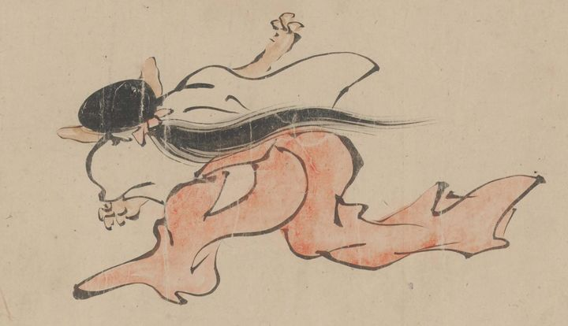

← 图鉴索引

女官のような着物を着た長い髪の動物が背中を見せて走っている。
出典：親書誌：U426_nichibunken_0435：［妖怪絵巻］／日付：2017／資源識別子：U426_nichibunken_0435_0001_0051
Copyright (c)2010- International Research Center for Japanese Studies, Kyoto, Japan. All rights reserved.